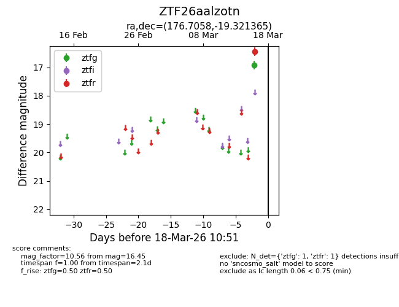
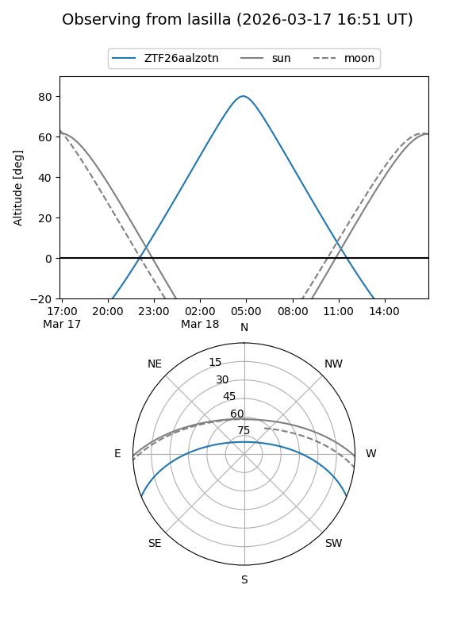
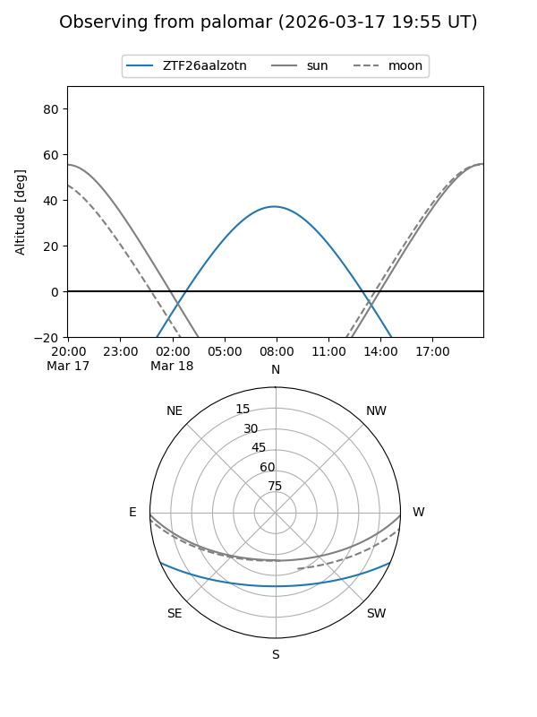

ZTF26aalzotn
Target ZTF26aalzotn at 2026-03-18 10:53
Aliases and brokers:
FINK: link
Lasair: link
ALeRCE: link
alt names
ZTF26aalzotn (ztf,fink_ztf)
Coordinates:
equatorial (ra, dec) = 176.7058,-19.32137
equatorial (HMS+DMS) = 11:46:49.40,-19:19:16.91
galactic (l, b) = (282.5801,+40.98290)
Flags:
Photometry:
last ztfg=16.92, ztfr=16.45
1 ztfg, 1 ztfr detections
Lightcurve

Visibility


Additional plots